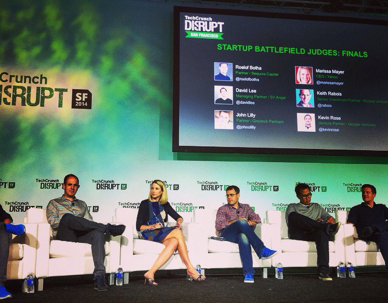

My First Time at TechCrunch
Author: Basil Vetas |
Startup Battlefield Finals - TechCrunch Disrupt San Francisco 2014
…
After becoming addicted to the TechCrunch blog about two years ago, and hearing all the glorified tales about Disrupt San Francisco from my co-workers time and again, I finally had the opportunity to attend the conference this past week as a TechCrunch volunteer. I jumped at the chance, and flew directly from Salt Lake City out to San Francisco. And being at the epicenter of Silicon Valley for the first day of the conference, my co-workers and I felt that it was only appropriate to take an Uber car from our Airbnb house down to the pier to where the Disrupt venue was located. As they say, when in Rome…
When we arrived at the conference, our volunteer group was immediately divided up and assigned to different tasks—some people managing registration, others helping the companies in Startup alley get set up, and a few volunteers were taken backstage into the ‘VIP’ lounge to start bagging gifts for the distinguished speakers. I was fortunate enough to be selected for the latter group, which I quickly realized was a huge perk to volunteering as I was able to interact with the TechCrunch staff and have encounters (albeit very briefly) with speakers like Mark Cuban, Max Levchin, and Marc Benioff.
Outside of my volunteering duties—which included body-guarding TechCrunch Radio and having to arm-bar Tim Armstrong as he attempted to walk through a live production (which he owns, as he made sure to inform me)—I was able to step aside to go watch some speeches and talk to the entrepreneurs. I wasn’t overly impressed with any of the companies I ran into at the conference, but there were a few that I thought were quite interesting including Stack, Gem, and Shipster who did quite well in the Battlefield competition. As far as speeches go, I really enjoyed hearing Mark Cuban talk about cyber security, and Peter Thiel discuss anti-aging research and the ethics of Uber.
There was no doubt in my mind that I would meet dozens of entrepreneurs presenting their startups at the conference, but one part of the experience that I was not expecting was the caliber and diversity of the other volunteers I was working with. Almost all of the volunteers and attendees that I met were entrepreneurs themselves trying to pitch their business, people working in the tech space, or journalists. And as much as I enjoyed hearing the onslaught of startup pitches over the weekend and picking up all kinds of company swag, the highlight of the conference for me without question was working with such a unique group and developing new relationships with a handful of awesome people.